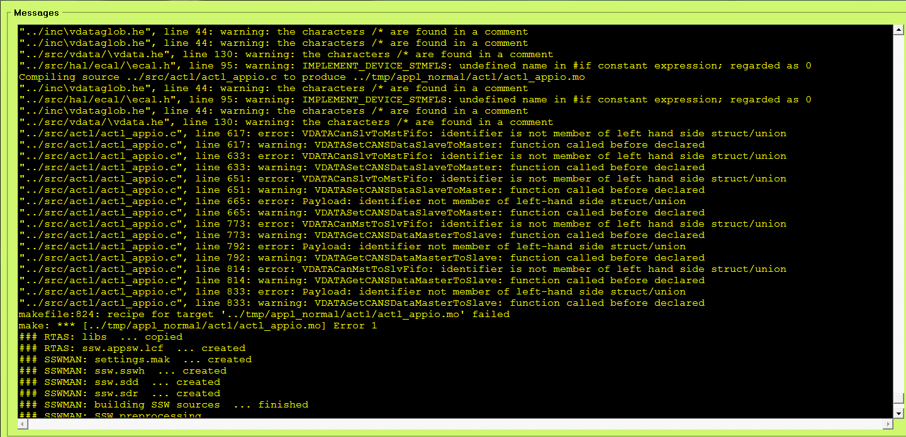

Fr 12.01.2018 12:37
Link für open Source
Hallo,
hat Kai gerade aufgestöbert, kennt Ihr https://comma.ai/ ?
Mit LCF SW quasi zum Download.
Der DMC ist ein PI-Regler, der KMC ein MPC...
Gruß,
Stefan
Code in D:\projekte\contiguard\AD\OpenPilotDevel kopiert
Do 22.09.2016 18:05 Lehrte
2016_09_22_lanechangeAbort_13
Messung mit Spurwechsel zur Ausfahrt rechts, geht Fahrzeug nach links
Mo 18.04.2016 08:35
Passat 2015 Test CAN Empfabg EBS
CAN_TEST = 0x00 ohne Reaktion
CAN_TEST = 0x01 Botschaft 0x32 (Request) nicht gültig empfangen ad_receive_status
CAN_TEST = 0x02 Botschaft 0x34 (ESA-Spezial) nicht gültig empfangen ad_receive_status
CAN_TEST = 0x04 Botschaft 0x32 (Request) Empfangstimestamp falsch
CAN_TEST = 0x08 Botschaft 0x34 (ESA-Spezial) Empfangstimestamp falsch
CAN_TEST = 0x10 Botschaft 0x32 (Request) Checksum-Problem
CAN_TEST = 0x20 Botschaft 0x34 (ESA-Spezial) Checksum-Problem
CAN_TEST = 0x40
CAN_TEST = 0x80 Start okay
Mo 11.04.2016 10:28
Pferdsfeld Messungen
Messungen zur Neigung der Fahrbahn
Skidpad_Vermessung_02 Nord-West-Eckpunkt-Punkt stehen in Richtung Westen
Skidpad_Vermessung_03 Nord-West-Eckpunkt-Punkt stehen in Richtung Osten
Skidpad_Vermessung_04 Nord-Ost-Eckpunkt-Punkt stehen in Richtung Osten
Skidpad_Vermessung_05 Nord-Ost-Eckpunkt-Punkt stehen in Richtung Westen
Skidpad_Vermessung_06 Süd-Ost-Eckpunkt-Punkt stehen in Richtung Osten
Skidpad_Vermessung_07 Süd-Ost-Eckpunkt-Punkt stehen in Richtung Westen
Skidpad_Vermessung_08 Süd-West-Eckpunkt-Punkt stehen in Richtung Westen
Skidpad_Vermessung_09 Süd-West-Eckpunkt-Punkt stehen in Richtung Osten
Skidpad_Vermessung_10 West nach Ost an Südkante entlang mit ~30 km/h
Skidpad_Vermessung_11 Ost nach West an Südkante entlang mit ~30 km/h
Skidpad_Vermessung_12 West nach Ost an Nordkante entlang mit ~30 km/h
Skidpad_Vermessung_13 Ost nach West an Nordkante entlang mit ~30 km/h
Skidpad_Vermessung_15 Süd nach Nord an Westkante entlang mit ~10 km/h
Skidpad_Vermessung_16 Nord nach Süd an Westkante entlang mit ~10 km/h
Skidpad_Vermessung_17 Nord nach Süd an Ostkante entlang mit ~10 km/h
Skidpad_Vermessung_18 Süd nach Nord an Ostkante entlang mit ~10 km/h
Messung_20 Lenkmoment oben +3.5 Nm, 100 kmh Fahrt von Ost nach West, Nordkante, Vergleich Querbeschleunigung
Messung_21 Lenkmoment oben +3.5 Nm, 100 kmh Fahrt von West nach Ost, Südkante, Vergleich Querbeschleunigung
Messung_22 Lenkmoment oben -3.5 Nm, 100 kmh Fahrt von Ost nach West, Südkante, Vergleich Querbeschleunigung
Messung_23 Lenkmoment oben -3.5 Nm, 100 kmh Fahrt von West nach Ost, Nordkante, Vergleich Querbeschleunigung
Ende der Messung Mo 11.04.2016 11:04
Mi 09.09.2015 14:00
Erstellen der neuen Projektstruktur erster Fehler:

Mo 20.07.2015 08:30
Hallo zusammen,
vielen Dank für das super Meeting. Hier ein paar Notizen, die ich mir nebenbei gemacht habe. Falls was fehlt oder falsch ist, bitte einfach ergänzen oder korrigieren.
Thema 1: Einseitige Bremsungen
Versuche am 23.07. in Griesheim; Fahrzeug 880
Situation 1: Lenkung geht noch (eigenes Rückstellmoment)
Situation 2: Lenkunterstützung deaktiviert
Aufzeichnung mit RT4000 (über Canalyzer) (in 880 fliegend verbaut)
Analysen: a) Möglicher Kurvenradius bei gegebenem Geschwindigkeiten, Druck steigern (bis ABS), Anfangsgeschwindigkeit vorgegeben
b) Druck <-> Lenkwinkel <-> Kurvenradius
Stichproben ggf. links / rechts
Vorher: Bremse überprüfen
Frage: Welchen Lenkrollradius hat der VW Passat 880? Wie ermitteln? Frank fragt Ex-Kollegen. Oliver fragt CTP wie Lenkrollradius beim Golf ermittelt wurde.
Thema 2: Kontrollierbarkeit
Während Integrationswoche in KW31 (Griesheim)
Ziel: Mehrere Personen fahren (bspw. 5 = Günther, Berthold, Böhmert, Fochler, Lotz?, Entwickler?)
Ablauf:
1. Hands-off (Hände im Schoss)
2. Aufschalten Lenkmoment mit gegebenem Moment und Gradient
3. Auswertung:
- Wie lange braucht Fahrer um zu reagieren?
- Wie groß ist der Spurversatz?
Was wird vorgegeben? Lenkwinkel oder Lenkmoment?
-> Zielgröße: Lenkwinkelgradient?
Voruntersuchung / Vorbereitungen: Solllenkwinkel vorgeben, der so abgestimmt ist um gewisse Momentgradienten zu erreichen...
Einspeisungen über Canapee vorbereiten
Frage: Welche Referenztechnik? RT4000 im 330 + ggf. weitere RT aus 560 in 440 oder 660 (beide mit in Griesheim) verwenden (zu klären)?
Viele Grüße,
Oliver